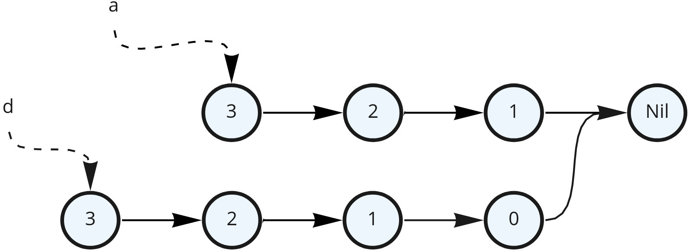
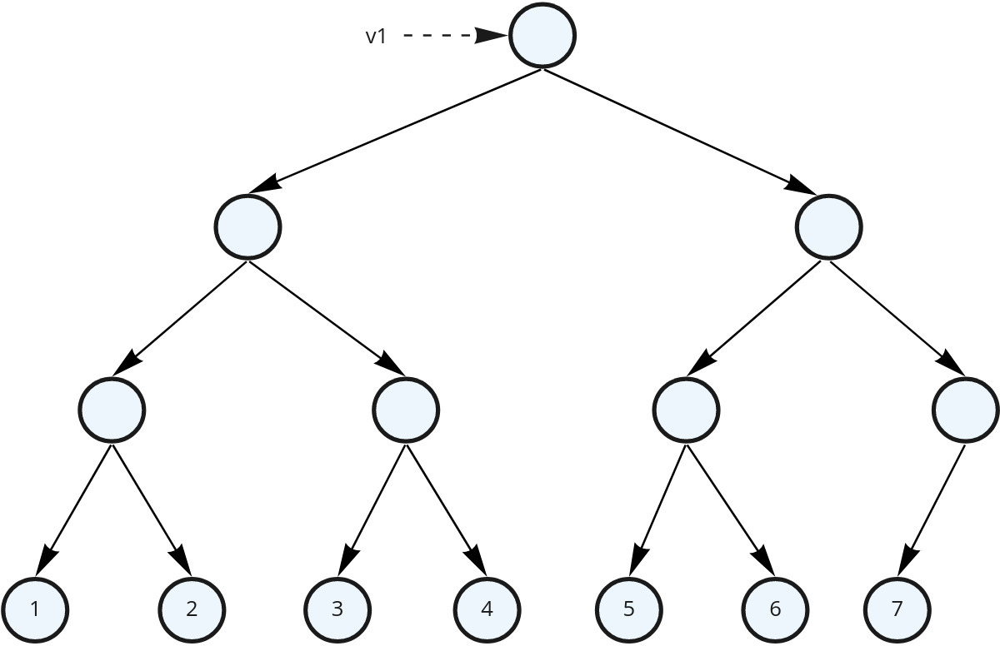

Основни подходи при ФП
За какво ще говорим
- Рекурсия
- Опашкова рекурсия, практични примери
- Неизменимост и неизменими структури от данни
- Функциите като първокласни обекти
- ламбда фунцкии и функционален тип
- Функции от по-висок ред -
map,filter,foldи други - Currying - защо и кои са средствата, които Скала ни дава
- Композиция на функции
- Изразяване чрез типове
Рекурсия

Примери
Unfolding the recursion
Използвайки substitution model
fact(5) -- 5 * fact(5 - 1) = -- 5 * fact(4) = -- 5 * (4 * fact(4 - 1)) = -- 5 * (4 * fact(3)) = -- 5 * (4 * (3 * fact(3 - 1))) = -- 5 * (4 * (3 * fact(2))) = -- 5 * (4 * (3 * (2 * fact(2 - 1)))) = -- 5 * (4 * (3 * (2 * fact(1)))) = -- 5 * (4 * (3 * (2 * 1)))ако извикаме функцията с
Int.MaxValueще получимjava.lang.StackOverflowError
Опашкова рекурсия (tail recursion)
“A recursive function is tail recursive when recursive call is the last thing executed by the function.”
Примери
Как изглежда стека тогава?
fact(5, 1)
--
fact(5 - 1, 5 * 1) =
--
fact(4, 5) =
--
fact(4 - 1, 5 * 4) =
--
fact(3, 20) =
--
fact(3 - 1, 20 * 3) =
--
fact(2, 60) =
--
fact(2 - 1, 60 * 2) =
--
fact(1, 120) =
--
120Ето какво
- Няма нужда да пазим променливи в стека от предните извиквания
- “Tail recursive” функциите могат да бъдат оптимизирани от компилатора
- accumulator подход
- @tailrec
Още примери
Нека преправим предните примери с опашкова рекурсия
Обхождане на списък
- drop
- reverse
- take
- nth element
- concat
Неизменимост
Неизменими обекти във времето
case class Person(name: String, age: Int, address: Address)
case class Address(country: String, city: String, street: String)
def getOlder(person: Person): Person = person.copy(age = person.age + 1)
val youngRadost = Person("Radost", 24, Address("Bulgaria", "Veliko Tarnovo", "ul. Roza"))
val olderRadost = getOlder(radost)Неизменимосттa ни позволява:
- Persistence (персистентност)
- и двата обекта (
youngRadostиolderRadost) остават валидни
- и двата обекта (
- Structural sharing
- и споделят голяма част от вътрешните си обекти
Неизменими обекти във времето
case class Person(name: String, age: Int, address: Address)
case class Address(country: String, city: String, street: String)
def getOlder(person: Person): Person = person.copy(age = person.age + 1)
val youngRadost = Person("Radost", 24, Address("Bulgaria", "Veliko Tarnovo", "ul. Roza"))
val olderRadost = getOlder(radost)
Неизменими структури от данни – списък

Неизменими структури от данни – списък

- Persistence
- Structural sharing
- Ако някоя променлива излезе от scope GC ще се погрижи за ненужните части
Списък от цели числа
Добавяне на елемент в края на списък

Тук вече няма как да споделим общите елементи
Вектор – оптимизация за произволен достъп

балансирано дърво
Вектор – операции
val v1 = Vector(1, 2, 3, 4, 5, 6, 7)
v1.head // 1
v1.last // 7
v1(4) // 5
// Трите операции имат еднаква сложностВектор – замяна на елемент

Вектор
- Дърво с 32 деца на всеки възел
- Така повечето му операции са със сложност log32n
- Което се смята за почти константа (ефективно константа)
- Полезно ако имаме нужда от произволен достъп
- Имплементира Radix Balanced Tree
- Примери за още операции тук
Чисто функционални структури от данни
- Разучаването им започва силно през 90-те
- Популяризирани чрез Clojure
- Persistence
- Structural sharing
- Подпомагани от GC
- Безопасно споделяне със всяка част от кода
- дори между нишки
- (~)константно създаване на производна структура – например с допълнителен елемент
Set и Map
- Подобно на Vector, също използват дърво, по-точно Trie
- Hash array mapped trie (HAMT)
- От Scala 2.13 – оптимизация
- Повечето им операции също са ефективно константа
- До 4 елемента се пазят в масив
Функциите като първокласни обекти
- Какво означава това?
- Могат да се използват навсякъде както бихме използвали “нормални” стойности
- Няма ограничение къде могат да бъдат дефинирани, т.е. като “нормални” стойности
- Типа им се описва подобно на “нормалните” стойности
- В Scala има Function literals - анонимни функции (ламбда)
Анонимни функции, a.k.a lambda
Синтаксис
Функционален тип
Функциите са обекти, които също си имат тип.
Когато дефинираме следната функция
всъщност се дефинира обект от тип
Function2с методapplyFunction2e нормаленtrait- репрезентира функции на два аргументаСъществуват подобни за функции на различен брой аргументи -
Function0…Function22
apply? - от предния път
Eta expansion
Преобразуване на метод към функция
Partial application
Типът на addOne е Int => Int
Higher-order functions
- Вече видяхме, че са функциите нормални стойности
- Което означава, че можем да ги подаваме на други функции или да ги връщаме като резултати
Дефиниция - Функции, които приемат функции като параметри или връщат функции като резултат
Пример
HOFs върху списъци
filter

filter
Примери
map

map
Примери
List(1, 2, 3).map(_ * 2)
// res0: List[Int] = List(2, 4, 6)
List("foo", "bar", "baz").map(wrapWithDiv)
//res1: List[String] = List("<div>foo</div>", "<div>bar</div>", "<div>baz</div>")
List(1, -5, 6, -20).map(_.abs)
//res12: List[Int] = List(1, 5, 6, 20)
List(1, 2, 3).map(sum(_, 1))
//res11: List[Int] = List(2, 3, 4)Имплементация
chaining
Синтаксис с блок
reduce

reduce
Примери
Допълнителни ресурси
Множество списъци с параметри
Но защо ни е?

Групиране на параметри
Type inference работи списък по списък
- Type inference-а работи на етапи от ляво надясно
- При
mapSLScala не може да определи типа наn, тъй като не знае типа наA - При
mapML:- първият списък определя типа на
A - при втория
Aвече е фиксиран, което позволява да се определиB
- първият списък определя типа на
Имплементиране на собствени конструкции
Имплементиране на собствени конструкции
Currying

Currying
currying е преобразуването на функция с много параметри към последователност от функции, всяка приемаща един параметър
кръстено на Haskell Curry
алтернатива на частично приложените функции
Операции с функции
Операции с функции – композиция
И при двата случая isEvenLen изразява s => even(len(s))
Операции с функции – currying
Операции с функции – tupled
Операции с функции – tupled
Scala 3 прави последното автоматично без нужда от tupled